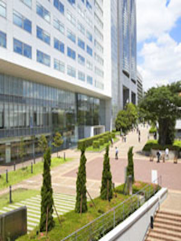

It is a place that anyone can then move freely and enjoy the feelings of the moment. The promenade, shops of food and fashion is dotted. Odakyu Southern Tower is a smart restaurant on 1-4 floor, cafe six stores, 5-18 floor office, building complex Odakyu Hotel Century Southern Tower is entered 19-35 floor. I can enjoy a comfortable hotel life at the hotel high-rise building.
